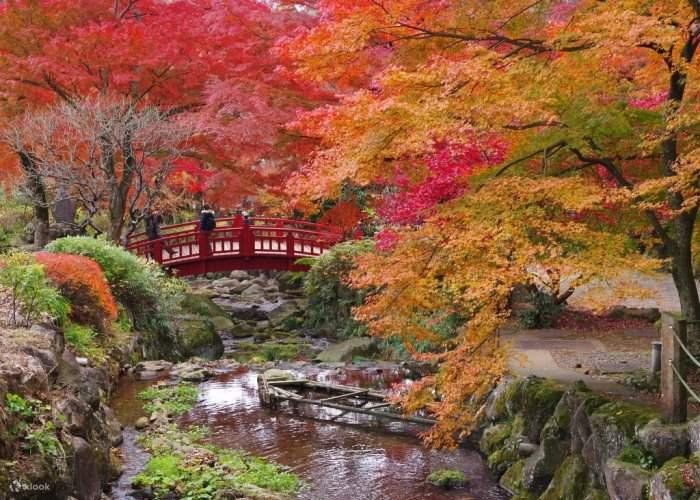
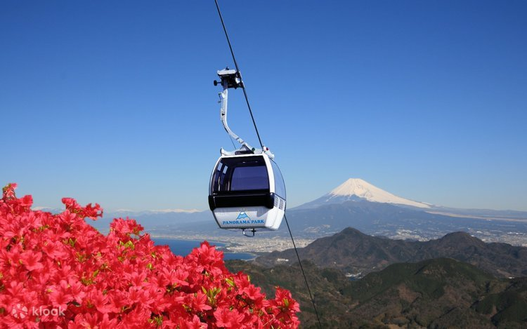
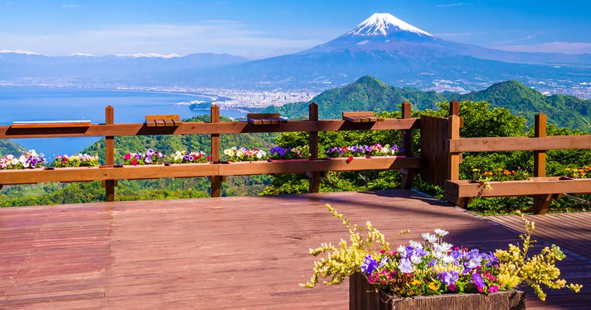
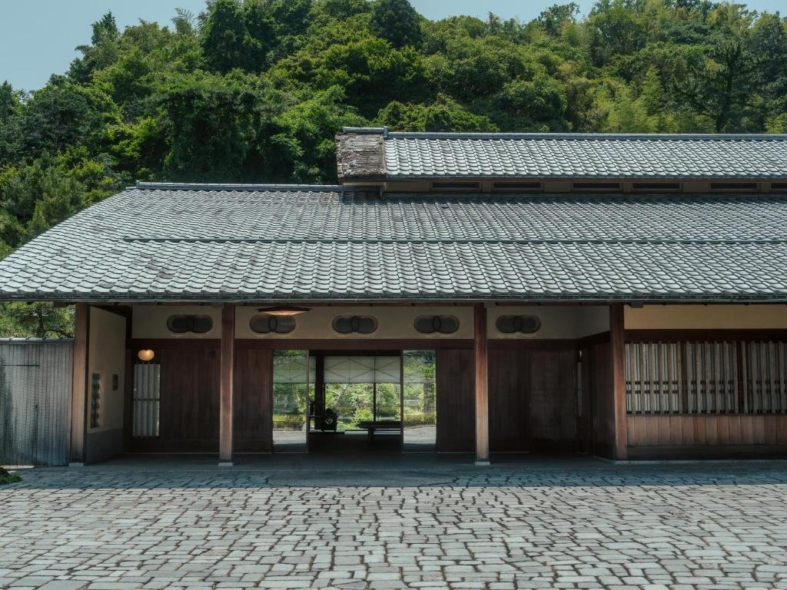
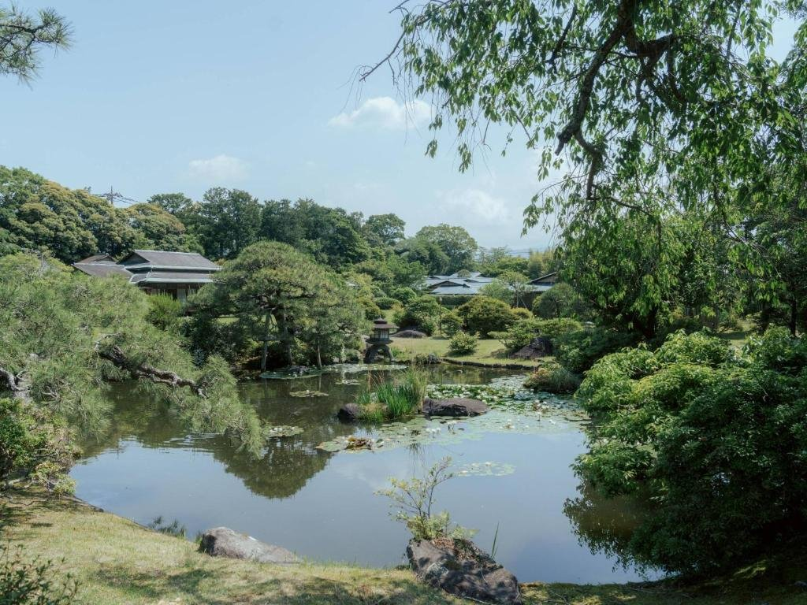
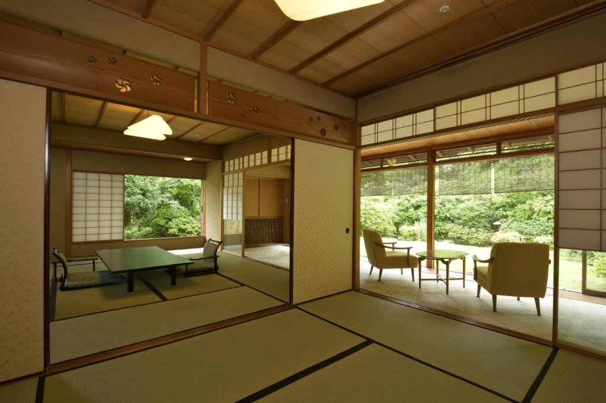

01
修善寺自然公園 紅葉林
公園裡的「もみじ林」種了約 1,000 棵楓樹，十一月中下旬是最佳賞楓期，紅、橘、黃層層疊疊，抬頭看像一片彩色的天花板。賞楓季會舉辦紅葉祭，傍晚還有點燈。
林間步道繞一圈約一小時，地上鋪滿落葉，踩起來沙沙響。旺季停車場收費 300 日圓，早一點到比較好停。

FIG. 01紅葉與紅橋
11.18 三
上午走修善寺自然公園的紅葉林，中午在伊豆長岡吃午餐，下午搭纜車上山看富士山，傍晚入住三養莊。
預估氣溫 伊豆・例年 11 月中旬 山頂風大更冷
穿搭 洋蔥式穿法。上葛城山帶防風外套，山頂體感比山下低好幾度。
10:30–11:00 之間出發。
旺季停車 300 日圓，散步約 1 小時。
候選餐廳在下方，出發前確認營業與訂位。
纜車來回 3,500 日圓，末班上山 16:30。
庭園散步、泡湯，晚餐在飯店。
公園裡的「もみじ林」種了約 1,000 棵楓樹，十一月中下旬是最佳賞楓期，紅、橘、黃層層疊疊，抬頭看像一片彩色的天花板。賞楓季會舉辦紅葉祭，傍晚還有點燈。
林間步道繞一圈約一小時，地上鋪滿落葉，踩起來沙沙響。旺季停車場收費 300 日圓，早一點到比較好停。

搭全長約 1.8 公里的纜車，大約 7 分鐘就上到標高 452 公尺的葛城山頂。山頂的「碧 Aoi Terrace」正面就是富士山和駿河灣，可以一邊泡足湯、一邊看海和富士山同框，天氣好時是伊豆數一數二的視野。
山上有咖啡座和幾條短步道，下午的光線打在富士山上最漂亮。纜車來回 3,500 日圓，末班上山 16:30。

FIG. 02山頂展望台看出去的富士山



1929 年（昭和 4 年）建成，原是三菱創辦人岩崎彌太郎的長子岩崎久彌的別邸，1947 年改為日式旅館，現在由王子飯店經營。
庭園由京都庭師小川治兵衛設計，約 9,900 平方公尺，池塘、松樹與石燈籠圍著客房，四季景色各不相同，秋天可以在園內散步看紅葉。數寄屋造的本館在 2017 年登錄為國家有形文化財，客房附有引溫泉的浴池。

秋日賞楓行 Day 3 / 6